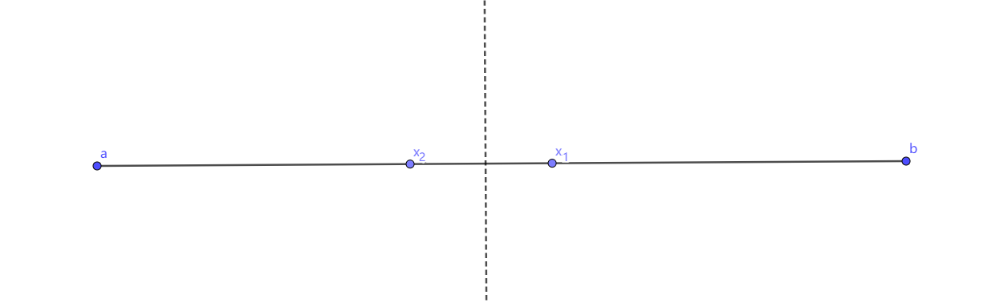
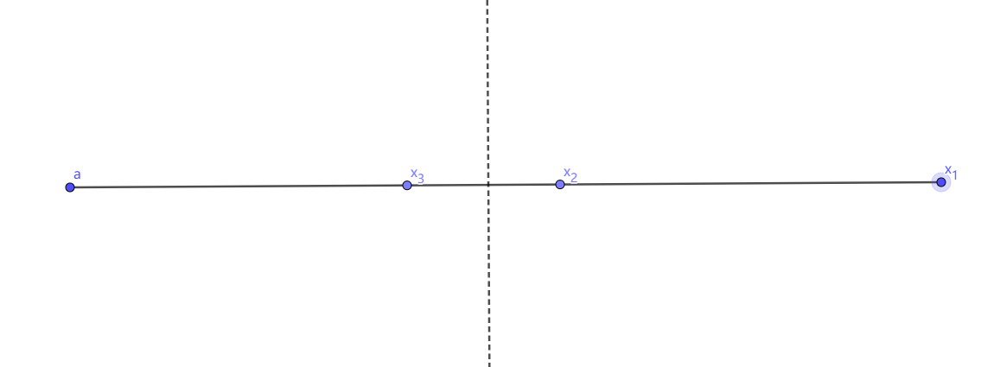

只是为了拿本子随便写的
老文章, 可能有很多错误, 懒得修了
前言
对于低于5次的多项式方程, 我们有通用的公式解法求零点的精确值
对于一些特殊高次多项式方程 (例如可以因式分解的或者满足一些特定形式的方程) 的和一些特殊的超越方程, 我们也有方法求零点的精确值
但是其余的情况呢？
目前来说我们只能求近似值QwQ (而且在实际应用中, 精确值往往也会被转换成近似值)
下面简要介绍几种方法
二分法
可以说相当常见了
对于在区间[l,r]内单调、连续且有f(l)⋅f(r)<0成立的f(x), 做如下操作:
- 计算mid=2l+r
- 若f(l)f(mid)<0, 则令r=mid, 否则令l=mid
- 如果达到预定精度, 跳转到4, 否则跳转到1
- 结束
循环次数: ⌈log2ϵr−l⌉
附程序:
1
2
3
4
5
6
7
8
9
10
11
| double binary_search(double l, double r, double EPS) {
double mid;
while (r - l > EPS) {
mid = l + (r - l) / 2;
if (F(mid) * F(l) <= 0)
r = mid;
else
l = mid;
}
return mid;
}
|
0.618法\优选法
常用于求单峰函数最值
先证明一下它的最优性(摘自人教版高中数学选修4-7没错真的有这本选修)
为了使每次去掉的区间有一定的规律性, 我们这样来考虑: 每次舍去的区间占舍去前的区间的比例数相同
下面进一步分析如何按上述两个原则确定合适的试点. 如图2-1 设第1试点、第2试点分别为x1和x2, x2<x1且x1,x2关于[a,b]的中心对称, 即x2−a=b−x1

(图2-1, 由GeoGebra生成)
显然, 不论点x2(或点x1)是好点还是差点, 由对称性, 舍去的区间长度都等于b−x1, 不妨设x2是好点, x1是差点, 于是舍去(x1,b]. 再在存优范围[a,x1]内安排第3次试验, 设试点为x3, x3与x2关于[a,x1]的中心对称 (如图2-2所示)

(图2-2, 由GeoGebra生成)
点x3应在点x2左侧, 因为如果点x3在点x2的右侧, 那么当x3是好点, x2是差点时, 要舍去区间[a,x2], 而它的长度与上次舍去的区间(x1,b]的长度相同, 违背成比例舍去的原则. 于是, 不论点x3 (或点x2) 是好点还是差点, 被舍去的区间长度都等于x1−x2, 按成比例舍去的原则, 我们有等式
b−ab−x1=x1−ax1−x2(1)
其中, 左边是第一次舍去的比例数, 右边是第二次舍去的比例数, 对式(1)变形, 得
1−b−ab−x1=1−x1−ax1−x2
即
b−ax1−a=x1−ax2−a(2)
式(2)两边分别是两次舍弁后的存优范围占舍弃前全区间的比例数, 设每次舍弃后的存优范围占舍弃前全区间的比例数为t, 即
b−ax1−a=t(3)
则由b−x2=x1−a可得
b−ax2−a=1−t(4)
由式(2)得
b−ax1−a=b−ax1−ab−ax2−a
把(3)与(4)代入(5), 得
t=t1−t
即
t2+t−1=0
解得t1=2−1+5,t2=2−1−5, 其中t1为对本问题有意义的根, 这就是黄金分割常数, 用φ表示 (注: 原文用ω表示)
一句话概括就是在缩小区间后可以只计算一个试点坐标, 从而保证最优
流程如下
- 计算mid1=lφ+r(1−φ), mid2=l(1−φ)+rφ
- 若f(l)f(mid1)>0
- 则令l=mid1,mid1=mid2,mid2=l(1−φ)+rφ
- 否则令r=mid2,mid2=mid1,mid1=lφ+r(1−φ)
- 如果达到预定精度, 跳转到4, 否则跳转到2 ** (注意这里跳转到2) **
- 结束
附程序:
1
2
3
4
5
6
7
8
9
10
11
12
13
14
15
16
17
| const double PHI = 0.61803399,
mPHI = 0.38196601;
double gold_search(double l, double r, double EPS) {
double mid1 = l + mPHI * (r - l), mid2 = l + PHI * (r - l);
while (r - l > EPS) {
if (F(mid1) < F(mid2)) {
l = mid1;
mid1 = mid2;
mid2 = l + PHI * (r - l);
} else {
r = mid2;
mid2 = mid1;
mid1 = l + mPHI * (r - l);
}
}
return (mid1 + mid2) / 2;
}
|
读者们可以在洛谷P3382中测试一下(～o￣3￣)～
关于这个还有一个类似方法: 斐波那契法. 有兴趣的读者可以查阅相关资料才不是笔者不想写_(:3」∠)_
Taylor公式
先讲这个是为了为下文Newton迭代法二次收敛的证明做铺垫, 不想看证明的可以略过QwQ (不过还是推荐了解一下, 挺有趣的)
这里假定函数f(x)在x0处有任意阶导数
我们可以很容易地求出多项式和类指数函数的近似值, 但是像三角函数、对数函数这样的我们又该如何求近似值呢
对了, 就是用Taylor公式QwQ
Taylor公式的想法很简单, 就是构造一个多项式函数g(x)=k=0∑nakxk, 使得它与函数f(x)在x0处的原函数值和各阶导数均相等, 即
f(x0)f′(x0)f′′(x0)f(n)(x0)=g(x0)=g′(x0)=g′′(x0)...=g(n)(x0)
因为
g(m)(x)=k=m∑n(k−m)!k!akxk−m
于是便有
g(x)=k=0∑nk!f(k)(x0)(x−x0)k
当n→∞时, 我们可以认为f(x)=g(x)
而当n有一个确定的值时, f(x)就可以写成g(x)+Rn(x)了
其中Rn(x)是余项, 它有好几种不同的写法, 比如Lagrange余项
Rk(x)=(k+1)!f(k+1)(ξL)(x−x0)k+1
其中ξL在x和x0之间
当n→∞时, 有(Taylor级数)
k=0∑∞k!f(k)(x0)(x−x0)k
特别地, 当x0=0时, 有(Maclaurin级数)
k=0∑∞k!f(k)(0)xk
另外注意应用Maclaurin级数并且x在某个范围之外时, 得到的结果可能是发散的(这个不展开讲, 有兴趣的读者可以去学习无穷级数相关知识)
附上Wikipedia的动图

对证明感兴趣的读者可以自行查阅相关资料
下面给出几个常见的Taylor级数
ex=k=0∑∞k!xk
sinx=k=0∑∞(−1)k(2k+1)!x2k+1
cosx=k=0∑∞(−1)k(2k)!x2k
(有上面三个式子就可以证明欧拉公式之eiθ=cosθ+isinθ了)
ln(1+x)=k=1∑∞(−1)k+1kxk
1−x1=k=0∑∞xk
(1+x)m=k=0∑∞(km)xk
Newton迭代法
先说说过程
- 随便确定一个数x0
- 求在f(x0)处的切线l:[y−f(x0)]=f′(x0)(x−x0)
- 求切线l的零点x1
稍加计算便得到了
x1=x0−f′(x0)f(x0)
既然是迭代, 那么自然就有
xn+1=xn−f′(xn)f(xn)
其中xn代表第n次迭代
附上Wikipedia的动图

二次收敛证明: (Wikipedia上的, 笔者翻译QwQ)
根据Taylor’s theorem, 任何二阶导数连续的函数f(x) (设α是根) 都可以写成
f(α)=f(xn)+f′(xn)(α−xn)+R1(1)
由Lagrange form of the Taylor series expansion remainder得
R1=2!1f′′(ξn)(α−xn)2
其中ξn在xn和α之间
由于α是根, 所以(1)式变为
0=f(α)=f(xn)+f′(xn)(α−xn)+21f′′(ξn)(α−xn)2(2)
(2)式两边同时除以f′(xn), 整理得
f′(xn)f(xn)+(α−xn)=2f′(xn)−f′′(ξn)(α−xn)2(3)
由于
xn+1=xn−f′(xn)f(xn)(4)
代入(3)式, 有
ϵn+1α−xn+1=2f′(xn)−f′′(ξn)(ϵnα−xn)2
即
ϵn+1=2f′(xn)−f′′(ξn)ϵn2(5)
两边取绝对值, 有
∣ϵn+1∣=2∣f′(xn)∣∣f′′(ξn)∣ϵn2(6)
(6)式表明, 如果函数满足以下条件, 其为二次收敛
- 对于所有的x∈I (I为区间[α−r,α+r],r≥∣α−x0∣ (即x0∈I) ) , 有f′(x)=0
- 对于所有的x∈I, f′′(x)连续
- x0足够接近根
"足够接近"意为
- Taylor近似足够准确 (可以忽略高阶项)
- 对于C<∞(原文如此), 21∣∣∣∣f′(xn)f′′(xn)∣∣∣∣<C∣∣∣∣f′(α)f′′(α)∣∣∣∣
- 对于n∈N, C∣∣∣∣f′(α)f′′(α)∣∣∣∣ϵn<1
当满足上述条件时, (6)式可以写为:
∣ϵn+1∣≤Mϵn2
其中
M=x∈Isup21∣∣∣∣∣f′(x)f′′(x)∣∣∣∣∣
由条件3得M∣ϵ0∣<1
程序:
1
2
3
4
| double newton(double x0;int n) {
for(int i=0; i<n; ++i) x0 -= f(x0) / df(x0);
return x0;
}
|
当然, 上述各方法的应用范围远不止于此, 有兴趣的读者可以自行查阅相关资料QwQ
赠品
cosx=x的解析解
对于PhOer来说, cosx=x这个方程应该是相当熟悉了QwQ
笔者在这里放上解析解 (近似值x=0.739) , 详情见参考文献[2] (文献里讲的是tsinx=x−m的解法, 不过笔者太弱了, 实在是看不懂QwQ)
2πexp(π1∫01xarctan(x2ln2(x1−x2+1)−πx−1(πx+2)ln(x1−x2+1)x)dx)
快速求x1
关于这个有一个相当有名的故事: 一个Sqrt函数引发的血案(这是笔者能找到的最早一篇了QwQ)
测试程序:
1
2
3
4
5
6
7
8
9
10
11
12
13
14
15
16
17
18
19
20
21
22
23
24
25
26
27
28
29
30
31
32
33
34
35
36
37
38
39
40
41
42
43
44
45
46
47
48
49
50
51
52
| #include <bits/stdc++.h>
float InvSqrt(float x, int it) {
float xhalf = 0.5f * x;
int i = *(int*)&x;
i = 0x5f3759df - (i >> 1);
x = *(float*)&i;
for (register int i = 1; i <= it; ++i)
x = x * (1.5f - xhalf * x * x);
return x;
}
float GetRErr(float test, float real) {
return fabs((test - real) / real * 100.0);
}
int main() {
int i = 0;
while (1) {
float t;
scanf("%f", &t);
if (t < 0) return 0;
float sys = 1.0 / sqrt(t),
invs1 = InvSqrt(t, 1), invs2 = InvSqrt(t, 2),
invs3 = InvSqrt(t, 3), invs4 = InvSqrt(t, 4),
invs5 = InvSqrt(t, 5), invs6 = InvSqrt(t, 6);
printf(
"Test#%d n=%f\n"
"System:\n%f\nTest:\n"
"it#1:%f RelativeErr:%.2f%%\n"
"it#2:%f RelativeErr:%.2f%%\n"
"it#3:%f RelativeErr:%.2f%%\n"
"it#4:%f RelativeErr:%.2f%%\n"
"it#5:%f RelativeErr:%.2f%%\n"
"it#6:%f RelativeErr:%.2f%%\n\n",
++i,
t,
sys,
invs1,
GetRErr(invs1, sys),
invs2,
GetRErr(invs2, sys),
invs3,
GetRErr(invs3, sys),
invs4,
GetRErr(invs4, sys),
invs5,
GetRErr(invs5, sys),
invs6,
GetRErr(invs6, sys));
}
return 0;
}
|
后记
这篇文章偏数学一些, 如果不能理解的话请多读几遍QwQ
其实可写的还有很多, 限于篇幅就到此为止了 (现在在后台打个字都要卡两秒QwQ)
因为笔者是个蒟蒻, 所以如果有错误, 烦请各位dalao不吝赐教
主要参考资料